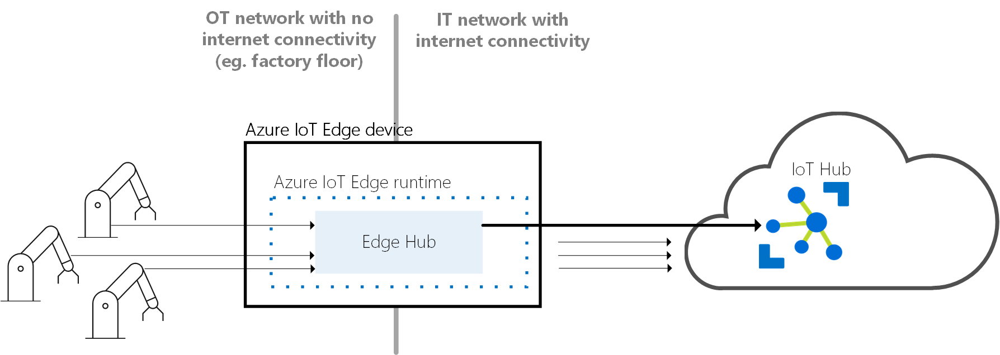

Azure 物联网 (IoT) 是 Microsoft 托管的云服务的集合，这些服务用于连接、监视和控制数十亿项 IoT 资产。 更简单地讲，IoT 解决方案由一个或多个 IoT 设备构成，这些设备与云中托管的一个或多个后端服务通信。
Microsoft 提供开源设备 SDK 用于构建在设备上运行的应用。 这些 SDK 可以简化并加速 IoT 解决方案的开发。支持的平台包括.NET、C、Java、Node.js、Python、iOS。
在 IoT 解决方案中，后端服务提供如下功能：
- 接收大规模的来自设备的遥测数据，并确定如何处理和存储该数据。
- 通过分析遥测数据为用户提供见解，不管是实时的还是事后的。
- 从云向特定设备发送命令。
- 预配设备并控制哪些设备可以连接到基础结构。
- 控制设备状态并监视设备活动。
- 管理设备上安装的固件。
Azure IoT的云端：Azure IoT 中心
IoT 中心托管服务在云中进行托管，充当中央消息中心，用于 IoT 应用程序与其管理的设备之间的双向通信。 可以使用 Azure IoT 中心，将数百万 IoT 设备和云托管解决方案后端之间建立可靠又安全的通信，生成 IoT 解决方案。 几乎可以将任何设备连接到 IoT 中心。
- 配置和控制设备
- 存储、同步和查询设备元数据和所有设备的状态信息
- 根据每个设备或设备的共同功能设置设备状态
- 通过信息路由集成自动响应报告设备的状态更改
- 缩放解决方案（可伸缩性、高可用性）
- IoT 中心可扩展为数百万个同时连接的设备，以及每秒数百万个事件以支持 IoT 工作负载。
- 保护通信
- 通过对每个设备进行身份验证，可以安全地将每个设备连接到 IoT 中心，并且安全地管理这些设备
- 可以完全控制设备访问，并可以根据每个设备的级别控制连接
- 自动将设备提供给正确的 IoT 中心
- 多种身份验证类型支持各种设备功能
- 路由设备数据
- 灵活地设置基于规则的自动消息扇出
- 与其他服务集成
- Azure 事件网格
- Azure 逻辑应用
- Azure 机器学习
- Azure 流分析
- …
Azure IoT的终端：Azure IoT 中心 SDK
- IoT 中心设备 SDK
- Azure IoT 设备 SDK 包含的代码可帮助构建连接到 Azure IoT 中心服务并由这些服务管理的应用程序。
- Azure IoT 设备 SDK 包含的代码可帮助构建Azure IoT Edge模块（Edge设备也是“设备”）
- IoT 中心服务 SDK
- Azure IoT 服务 SDK 包含的代码可帮助生成直接与 IoT 中心进行交互以管理设备和安全性的应用程序。
Azure IoT的边缘端：Azure IoT Edge
IoT Edge 运行时提供基础结构可集成多个 IoT Edge 模块的功能并将其部署到 IoT Edge 设备上。 任意程序都可打包为 IoT Edge 模块。Azure IoT Edge 运行时在各种大型 IoT 设备上运行，因此可以通过各种方式来使用该运行时。 它支持 Linux 和 Windows 操作系统，并可提取硬件详细信息。 如果要处理的数据不多，请使用比 Raspberry Pi 3 小的设备；如果要运行资源密集型工作负荷，请使用工业服务器。
Azure IoT Edge 模块
通过 Azure IoT Edge，可让你以模块 的形式来部署和管理 Edge 上的业务逻辑。 Azure IoT Edge 模块是由 IoT Edge 托管的最小计算单位，可以包含 Azure 服务（如 Azure 流分析）或你自己特定于解决方案的代码。
模块映像/模块实例
模块映像包含定义模块的程序包。模块实例是在 IoT Edge 设备上运行模块映像的特定计算单位。 该模块实例由 IoT Edge 运行时启动。
- 模块映像作为存储库中的容器映像存在，而模块实例则是设备上的容器。
- 除了两个运行时模块以外，每个IoT Edge 设备最多运行20个模块。
- 每个设备上运行哪些模块由一个用户编写的部署清单指定
模块标识
存储在 IoT 中心的一段信息（包括安全凭据），与每个模块实例一一对应。当 IoT Edge 运行时创建新的模块实例时，它将获得相应的模块标识。 模块标识将存储在 IoT 中心，并用作该模块实例的所有本地和云通信的寻址和安全范围。
模块孪生
存储在 IoT 中心的 JSON 文档，包含模块实例的状态信息，其中包括元数据、配置和条件。每个模块实例都有一个对应的模块孪生，你可以使用它来配置模块实例。 实例和孪生通过模块标识进行相互关联。
Azure IoT Edge 运行时
IoT Edge 运行时是将某个设备转换为 IoT Edge 设备的程序集合。 在 IoT Edge 运行时组件的共同作用下，IoT Edge 设备可以接收要在边缘上运行的代码并传递结果。
- 在设备上安装和更新工作负荷。
- 维护设备上的 Azure IoT Edge 安全标准。
- 确保 IoT Edge 模块始终处于运行状态。
- 将模块运行状况报告给云以进行远程监视。
- 管理下游设备与 IoT Edge 设备之间的通信。
- 管理 IoT Edge 设备上的模块间的通信。
- 管理 IoT Edge 设备和云之间的通信。
Azure IoT Edge 运行时由两个Azure IoT Edge 模块：“IoT Edge 中心”和“IoT Edge 代理”组成
IoT Edge 中心
与Azure IoT 中心连接
它通过公开与 IoT 中心相同的协议终结点，充当 IoT 中心的本地代理。 这种一致性意味着客户端（无论是设备还是模块）可以连接到 IoT Edge 运行时，就像连接到 IoT 中心一样。

IoT Edge 中心将一些任务以无提示方式委托给 IoT 中心。 例如，设备首次尝试连接时，IoT Edge 中心会将身份验证请求转发给 IoT 中心。 建立第一个连接之后，IoT Edge 中心会在本地缓存安全信息。 无需再次在云中进行身份验证即可允许该设备的未来连接。
Azure IoT 模块间通信
IoT Edge 中心促进模块间通信。 使用 IoT Edge 中心作为消息中转站可以保持模块之间相互独立。 模块只需指定它们接受消息的输入和写入消息的输出。 解决方案开发人员可以将这些输入和输出拼接在一起，以便于模块按特定于该解决方案的顺序处理数据。
IoT Edge 代理
负责实例化模块、确保它们继续运行以及报告返回到 IoT 中心的模块的状态。 此配置数据作为 IoT Edge 代理模块孪生的属性写入。